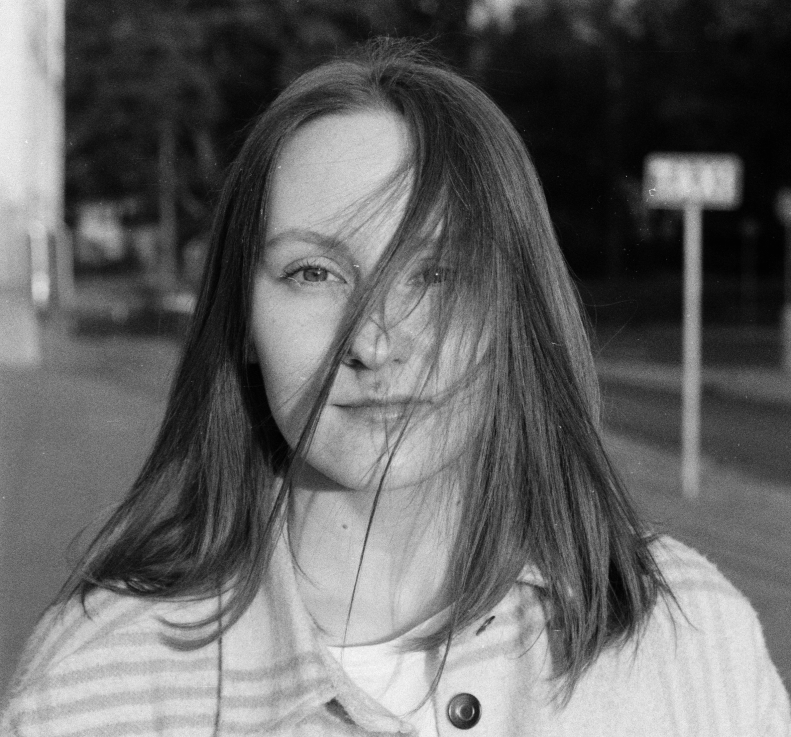

Yuliya Nazaranka
- Beginner Frontend Developer
- Gdansk, Poland
- Phone: +48 515233347
- E-mail: nazarenko.ylia@gmail.com
- Telegram: @nazarenkoylia
- LinkedIn: yuliya-nazaranka
About me
I used to work as a medical doctor in Belarus, but when I moved to Poland I decided to change my profession and become a Frontend Developer. At the moment I am a student of Frontend UpSkillMe Mentoring Program.
Education and courses
- EPAM Frontend UpSkillMe Mentoring Program
- EPAM UpSkillMe IT Fundamentals
- Belarusian State Medical University
Skills
- HTML
- CSS
- GIT/GitHub
Languages
- Russian - Native
- English - B1 (EPAM English test result)